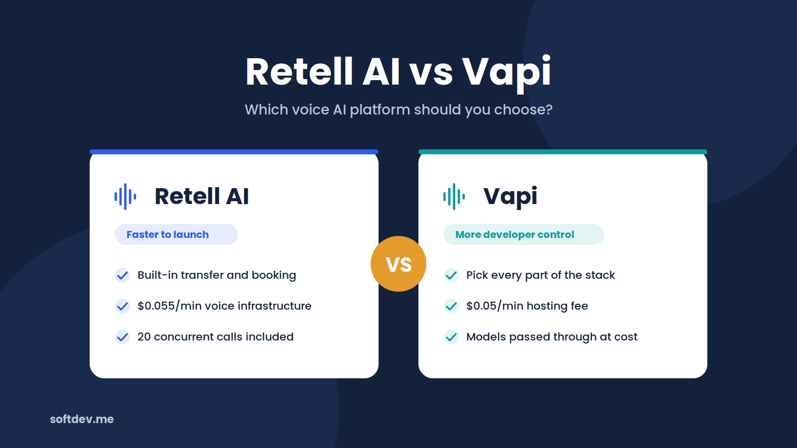
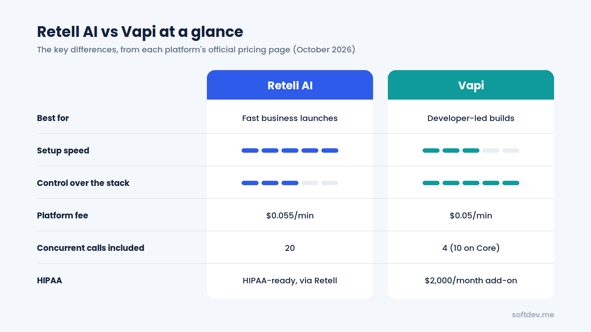
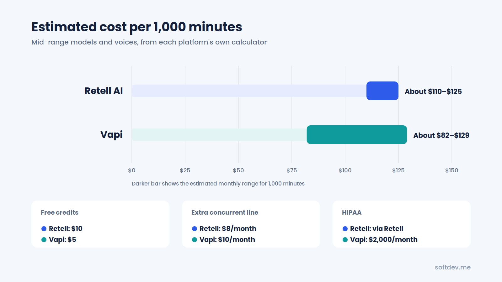
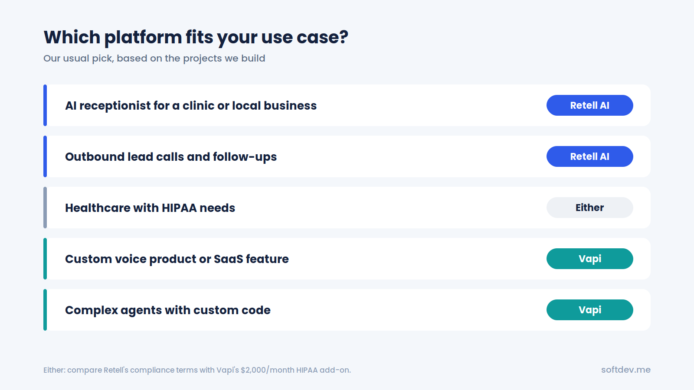
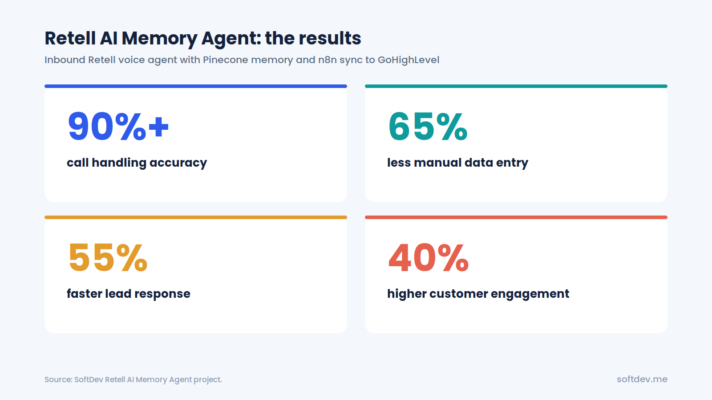

Retell AI vs Vapi: Which Voice AI Platform Should You Choose?
An honest, simple comparison of the two most popular AI voice agent platforms: how they work, what they really cost, and which one fits your business.

TL;DR - 6 takeaways - 15-second read
- Retell AI and Vapi both let you build AI phone agents that answer calls, book appointments, and qualify leads.
- Retell AI is quicker to get live, with templates, built-in features, and one simple per-minute bill.
- Vapi gives developers more control over every part of the voice stack, but needs more setup work.
- A typical setup costs roughly $0.08 to $0.15 per minute on both, but they bill in different ways.
- Both support HIPAA setups for healthcare, but Vapi charges a $2,000 per month add-on for it.
- For most small businesses we usually start with Retell. For highly custom, developer-led builds, Vapi often wins.
Introduction
If you're planning to build an AI voice agent, you've probably come across Retell AI and Vapi. Both platforms let you create AI agents that can talk to people over the phone. You can use them to answer customer questions, schedule appointments, follow up with leads, and handle many of the calls that would otherwise require a member of your team.
At first, they might seem almost identical. Both offer pay-as-you-go pricing, support popular AI models, and connect with phone systems and CRMs. The differences become more noticeable when you start building an actual agent.
One platform focuses on making the development process straightforward, while the other gives you more freedom to choose and configure the individual components. Those differences can affect how quickly you launch, how much development work you need, and what you ultimately pay.
At SoftDev, we've built voice agents on both platforms. This comparison draws on that experience alongside the platforms' published pricing and features. Let's look at what each one offers and where each makes the most sense.
What Is Retell AI?
Retell AI is a platform for building AI agents that can make and receive phone calls. You can create an agent through its dashboard, connect a phone number, configure how it responds, and test it before putting it into use.
For example, a business could use Retell AI to build an AI receptionist that answers incoming calls, responds to common questions, books appointments, and transfers callers to a human when needed.
One thing that makes Retell convenient is that many common voice-agent features are available within the platform. These include:
- Call transfers to human staff
- Appointment booking
- Knowledge bases for answering questions
- IVR navigation
- Outbound calling campaigns
- Branded caller ID
- Call analysis and post-call summaries
Retell also supports integrations with tools such as Twilio, n8n, Make, HubSpot, and GoHighLevel. This means you can connect your voice agent to the systems your business already uses without building every integration from scratch.
The main advantage of Retell AI is how quickly you can get a working agent up and running. You still need to configure and test the agent properly, but you don't have to assemble every part of the voice system yourself. For businesses that want an AI receptionist or appointment-setting agent without a lengthy development process, that's a major benefit.
What Is Vapi?
Vapi is a voice AI platform designed primarily for developers who want more control over how their agents work. Rather than relying on one bundled setup, you can choose the different components that power your voice agent. These typically include:
- Speech-to-text, which converts the caller's speech into text
- An AI model that processes the conversation and generates responses
- Text-to-speech, which turns the agent's responses into spoken audio
- Telephony services that connect the agent to phone calls
Vapi connects these components and manages the voice interaction, while giving you flexibility over the underlying services. For example, you might choose one provider for speech recognition, another for generating responses, and a third for the voice. You can also use your own API keys for supported providers.
This flexibility is useful when you're building a voice agent with specific technical requirements or developing a voice feature that will become part of your own software product. However, there's a trade-off. You have more decisions to make, and getting all the components to work well together can take additional development and testing.
Vapi is a strong option when customization matters more than having everything ready out of the box. If your team has the technical experience to configure and maintain the system, that extra control can be worth the effort.
Retell AI vs Vapi at a Glance
Here's a quick comparison of the two platforms based on their published features and pricing as of October 2026.
| Feature | Retell AI | Vapi |
|---|---|---|
| Best suited for | Businesses that want to launch quickly | Developers who want greater control |
| Pricing model | Per-minute pricing based on platform and service components | Platform hosting fee plus underlying service costs |
| Base platform cost | $0.055/minute for voice infrastructure | $0.05/minute hosting fee |
| Free credits | $10 | $5 |
| Included concurrent calls | 20, then $8/month per additional line | 4, or 10 on the $29/month Core package, then $10/month per additional line |
| Built-in features | Call transfers, booking, batch calling, and call analysis | Core voice infrastructure, with more components configured by the developer |
| Integrations | Ready-made integrations with several business and automation tools | API-based integrations and support for multiple telephony providers |
| Healthcare compliance | Describes itself as HIPAA-ready, with arrangements handled directly with customers | HIPAA-related add-on listed at $2,000/month |
| Entry-level support | Community and email | Discord community and email, without an SLA on the entry plan |
Pricing and features can change. Check each provider's official pricing and documentation before making a purchasing decision.
The biggest difference is straightforward: Retell AI offers a more packaged experience, while Vapi gives you more control over the individual parts of your voice agent. That doesn't automatically make one cheaper or better than the other. Your requirements will determine which platform offers better value.

Ease of Setup
If your goal is to get an AI voice agent working as quickly as possible, Retell AI has the advantage.
Retell AI
Retell provides templates and built-in features that make the initial setup easier. You can configure an agent, connect a phone number, test its responses, and start refining its call flow without having to choose every underlying component yourself. It also offers simulation tools that let you test how an agent handles different conversations before real customers interact with it.
For example, if you're building an AI receptionist for a clinic, you can test whether it answers questions correctly, collects the caller's information, books appointments, and transfers calls when necessary. This helps you identify problems before the agent goes live.
Vapi
Vapi gives you more flexibility, but that flexibility comes with additional setup work. You'll need to choose your speech recognition provider, AI model, voice, and other components. You may also need to spend more time adjusting the settings to get the conversation flowing naturally.
Vapi provides testing and simulation tools too, so you're not left without ways to evaluate your agent. However, getting everything configured to your requirements can take more development time.
Which Is Easier?
For businesses without a dedicated development team, Retell AI will generally be the easier option. Vapi makes more sense if you have developers who are comfortable working with APIs, configuring different services, and troubleshooting a custom voice stack.
Neither platform eliminates the need for testing. The difference is how much work you need to do before you have a usable starting point.
Flexibility and Control
Setup is only one part of the decision. You should also consider how much control you'll need as your project develops.
Vapi: More Control Over the Voice Stack
Vapi is particularly useful when you want to choose exactly how your voice agent works. You can select supported speech recognition services, use different AI models, choose voices from various providers, and customize your call logic.
You can also bring your own API keys for supported providers. This gives developers more freedom to experiment with different configurations and optimize individual components. For instance, you might use a less expensive model for straightforward customer questions and a more capable model for conversations that require additional reasoning.
If you're developing a voice AI product for multiple clients, that flexibility can be especially valuable.
Retell AI: Flexibility Within a More Structured Platform
Retell AI isn't limited to one AI model or voice provider. It supports multiple models and voices, and it allows custom LLM integrations and connections to external phone systems through SIP.
For many business applications, these options provide plenty of room to customize an agent. The difference is that you're working within Retell's framework rather than assembling the entire voice stack yourself. That approach is often more convenient when your goal is to solve a business problem instead of experimenting with the underlying technology.
Choose Vapi when you need extensive technical control. Choose Retell when its existing features cover your requirements and you'd rather spend less time on setup.
Integrations
An AI voice agent becomes much more useful when it can communicate with the other tools your business relies on. For example, an agent might answer a call, look up a contact in your CRM, check appointment availability, book a meeting, and save the conversation details. Both Retell AI and Vapi can support workflows like these.
Retell AI Integrations
Retell lists ready-made integrations with tools including:
- Twilio
- Vonage
- Make
- n8n
- HubSpot
- GoHighLevel
These integrations cover many of the systems used by small and medium-sized businesses. You can also use APIs and webhooks to connect Retell to custom applications.
Vapi Integrations
Vapi supports telephony through its own options and providers such as Twilio, Vonage, and Telnyx. It also supports SIP connections.
For CRM integrations and more complex business workflows, developers can use Vapi's API, webhooks, or automation platforms such as n8n. This approach offers considerable flexibility, although it may require more configuration depending on the systems you're connecting.
Which Platform Has Better Integrations?
For most projects, integrations alone won't determine the winner. At SoftDev, we use n8n to connect voice agents to CRMs, calendars, and other business systems. This lets us build workflows around the client's existing setup rather than relying entirely on a platform's built-in integrations.
For example, when a voice agent books an appointment, an automation workflow can update the CRM, save the call summary, and trigger a follow-up message. Both platforms can support this kind of setup.
The more important question is whether the platform can connect reliably to the systems your business already uses.
Compliance and Security
If you're building a voice agent for healthcare, finance, or another industry that handles sensitive information, security and compliance need to be part of your decision from the beginning. You should understand how calls and recordings are handled, where information is stored, which services process it, and what contractual protections are available.
Retell AI
Retell AI describes itself as SOC 2 certified and HIPAA-ready. It also offers features such as single sign-on and customized compliance terms for larger customers.
However, you shouldn't assume that using Retell automatically makes your entire application HIPAA compliant. Your configuration, connected services, data handling practices, and contractual arrangements all matter.
Vapi
Vapi offers HIPAA-eligible data handling and provides a standard Data Processing Agreement. Its HIPAA-related offering includes a Business Associate Agreement through a listed $2,000-per-month add-on. Vapi also describes zero data retention as a feature available with its paid success packages.
Because these arrangements can change, confirm the current terms directly with the provider before handling sensitive information.
Which Is Better for Healthcare?
Both platforms may be suitable, depending on your requirements and the arrangements available to your organization. However, the cost and terms of compliance can make a significant difference.
For a small clinic, Vapi's listed $2,000 monthly HIPAA add-on could cost more than the actual voice usage. Retell may be worth exploring as an alternative, but you should confirm its current compliance requirements, contractual terms, and supported configuration before choosing it.
Important: Before processing patient information, verify that the necessary agreements are in place and that every service in your workflow is configured appropriately. Platform features alone do not guarantee compliance.
Pricing Compared
Pricing is one of the biggest considerations when choosing a voice AI platform. At first glance, the advertised rates might seem straightforward. In practice, the total cost depends on several components, including the voice, AI model, phone service, and any additional features you use.
Let's break down how each platform charges.
How Retell AI Pricing Works
Retell AI lists pay-as-you-go voice agent pricing of approximately $0.07–$0.31 per minute, depending on your configuration. There is no separate platform subscription fee for the standard pay-as-you-go setup, and new users receive $10 in free credits.
Your total cost can include:
| Component | Approximate Cost |
|---|---|
| Voice infrastructure | $0.055/minute |
| Text-to-speech | From $0.015/minute for standard voices |
| AI model | Depends on the model selected |
| Retell-managed US phone service | Approximately $0.015/minute |
| Free starting credits | $10 |
Premium voices, including certain ElevenLabs options, can increase the cost. The AI model you choose also affects the final rate. More capable models may cost more, so it's worth testing different options before settling on a configuration.
Retell's pricing calculator estimates a mid-range setup at approximately $0.11 per minute before telephony costs. Retell bills usage to the nearest second and states that calls that fail to connect aren't charged. Your actual bill will depend on your configuration and usage.
How Vapi Pricing Works
Vapi charges a hosting fee of $0.05 per minute and passes through the costs of the underlying models and services. You receive $5 in free credits when getting started. The total cost depends on the speech recognition provider, AI model, voice, and telephony setup you choose.
Vapi also offers optional packages for additional support and capacity:
- Core: $29 per month.
- Pro: 10% of the hosting fee, with a minimum charge of $999 per month.
These packages have their own terms and may provide additional support, concurrent call capacity, and other benefits.
Vapi's calculator estimates that 1,000 minutes of usage costs approximately $82–$129 per month when using Deepgram, an OpenAI model, ElevenLabs voices, and free Vapi telephony. That works out to roughly $0.08–$0.13 per minute.
Monthly Cost Comparison
Here's how the two platforms compare at different usage levels.
| Monthly Usage | Retell AI (Approx.) | Vapi (Approx.) |
|---|---|---|
| 1,000 minutes | $110–$125 | $82–$129 |
| 5,000 minutes | $550–$625 | $410–$645 |
| 10,000 minutes | $1,100–$1,250 | $820–$1,290 |
These figures are estimates based on the platforms' calculators and comparable mid-range configurations. They're not guaranteed quotes. Actual costs will vary depending on the models, voices, phone services, and additional features you use.
The comparison shows that neither platform is automatically cheaper in every situation. Vapi can be less expensive with a carefully selected set of components, while Retell's more packaged setup may be more convenient for businesses that want to minimize configuration work.
Additional Costs to Consider
The per-minute rate isn't the only expense worth checking.
| Additional Cost | Retell AI | Vapi |
|---|---|---|
| Extra concurrent calls | $8/month per additional line after the included 20 | $10/month per additional line after the applicable package limit |
| Phone numbers | Approximately $2/month each; bring-your-own-number options may be available | One free number is listed, with additional options depending on the setup |
| Healthcare compliance | Arrangements handled directly with Retell | Listed HIPAA add-on at $2,000/month |
| Additional features | Some features, such as knowledge base and denoising options, may add usage costs | Optional packages for support and service-level agreements |
Before committing to either platform, estimate your expected monthly call volume and check how many calls may happen simultaneously. A business receiving 1,000 minutes of calls spread throughout the day has different requirements from one receiving the same volume during a few busy hours.
The bottom line: For a typical configuration, the two platforms can have similar per-minute costs. Your choice should also account for concurrent calls, additional features, support, and compliance requirements.

Which One Should You Choose?
There isn't one platform that's best for every project. The right choice depends on what you're building, how much customization you need, and who will maintain the system after launch.
Choose Retell AI If...
Retell AI is a good starting point if:
- You want to launch an AI receptionist or appointment-setting agent quickly.
- You don't have a full-time developer available for the project.
- You need common features such as call transfers, appointment booking, and call analysis.
- You want built-in support for outbound calling campaigns.
- You expect multiple calls to arrive at the same time and want to start with its included concurrent call capacity.
For example, a local business that wants an AI receptionist to answer calls, handle common questions, and book appointments may find Retell easier to manage. You can focus on the call flow and business requirements instead of spending as much time configuring the underlying voice infrastructure.
Choose Vapi If...
Vapi may be the better choice if:
- You have developers who want greater control over the voice stack.
- You need to select specific AI models, speech recognition services, and voices.
- You want to use your own API keys for supported providers.
- You're building a voice AI product or SaaS feature rather than a single business agent.
- You need custom call logic or want to optimize different parts of the system independently.
For example, a software company developing a voice AI product may want to experiment with multiple models, integrate its own backend, and control how each part of the conversation works. Vapi gives developers more room to build around those requirements.
Our Recommendation by Use Case
| Use Case | Our Usual Choice | Why |
|---|---|---|
| AI receptionist for a clinic or local business | Retell AI | Faster setup, built-in booking and call transfer |
| Outbound lead calls and follow-ups | Retell AI | Built-in batch calling and branded caller ID options |
| Healthcare project requiring HIPAA support | Either | Compare the available compliance arrangements and total cost |
| Custom voice AI product or SaaS feature | Vapi | More control over the underlying components |
| Complex agents with custom code | Vapi | Greater flexibility over the call logic |
These are starting recommendations, not strict rules. A complex project can work well on Retell, and a straightforward business agent can be built on Vapi. The important thing is to match the platform to the project instead of choosing one simply because it's more popular.

Our Experience Building on Both Platforms
At SoftDev, we build AI voice agents using both Retell AI and Vapi. We choose between them based on what the client needs rather than trying to use the same platform for every project. One example is our Retell AI Memory Agent.
Building a Voice Agent That Remembers Previous Conversations
We built an inbound voice agent using Retell AI that can retrieve information from a caller's previous interactions. The idea is simple: when someone calls again, the agent shouldn't have to treat the conversation as if it's the first time they've contacted the business.
The system uses Pinecone to look up relevant information from previous interactions. This gives the agent context that can help it respond more appropriately during the current call.
After the call, n8n automatically syncs the relevant information into GoHighLevel. This connects the voice agent to the wider business workflow instead of leaving the conversation isolated from the CRM.
Reported Results
The project reported the following results:
| Metric | Reported Result | What It Means |
|---|---|---|
| Call-handling accuracy | 90%+ | The agent handles calls using contextual memory and defined decision logic |
| Reduction in manual data entry | 65% | Call details and follow-ups are sent to the CRM automatically |
| Faster lead response | 55% | Real-time CRM updates help the team respond sooner |
| Increase in customer engagement | 40% | Callers receive conversations informed by previous interactions |
These figures reflect the reported results of this project, rather than guaranteed outcomes for every voice agent.

Why We Chose Retell for This Project
For this particular agent, we wanted a reliable inbound voice system that we could get running quickly, with the call features we needed and straightforward usage-based billing. Retell was a good fit.
For other projects, particularly those that require more control over individual voice components or extensive custom logic in code, Vapi may be the better option. Working with both platforms has also taught us a few lessons that apply regardless of which one you choose.
1. Start with a cost-effective AI model.
You don't always need the most expensive model to build a useful voice agent. Start with an affordable option, test it against real scenarios, and upgrade only if the results justify the additional cost.
2. Plan for busy periods.
Don't look only at the total number of calls you expect each month. Think about how many calls might arrive at the same time, too. This will help you choose the right concurrent call capacity.
3. Pay attention to the integrations.
A voice agent needs to work with the rest of the business. Connecting it to the CRM, calendar, and follow-up workflows is often just as important as choosing the voice platform.
4. Test real conversations before going live.
An agent may perform well in a simple demonstration but struggle with interruptions, unclear questions, or requests that fall outside its usual workflow. Test these situations before allowing the agent to handle real customer calls.
Conclusion
Retell AI and Vapi are both capable platforms for building AI voice agents. For many typical business applications, their overall per-minute costs are relatively close. The bigger difference is how you build and manage your agent.
Retell AI is a good choice if you want to get a working voice agent up and running without spending too much time assembling the technology behind it. Its built-in features make it particularly useful for AI receptionists, appointment booking, and outbound calling.
Vapi is a better fit when you need more control over the individual components of your voice agent. Developers can choose their preferred models, voices, and speech services, making it useful for custom applications and voice AI products.
Before deciding, consider three things:
- Who will build and maintain the agent?
- How many calls do you expect, including calls that happen at the same time?
- Do you have specific compliance requirements that could affect your costs?
Your answers will help narrow down the options.
At SoftDev, we use both platforms depending on the project. Our usual starting point for a business that needs an AI receptionist is Retell AI, while we lean toward Vapi when a project calls for more technical control. The best platform is ultimately the one that meets your requirements, works reliably, and makes financial sense for your business.
Frequently Asked Questions
Is Retell AI cheaper than Vapi?
Not necessarily. For a typical setup, both platforms can cost around $0.08–$0.15 per minute, depending on the configuration.
Retell includes more concurrent calls in its standard offering, while Vapi lets you select different service providers and models to manage costs. The less expensive option depends on your usage and requirements.
Which platform is easier for beginners?
Retell AI is generally easier to get started with. It offers templates and built-in features such as call transfers and appointment booking, so you don't need to configure as many components yourself. Vapi offers more flexibility but typically requires more technical setup.
Can I use my existing phone number with Retell AI or Vapi?
Yes. Both platforms support connecting existing phone systems through SIP and work with telephony providers such as Twilio and Vonage. The exact setup will depend on your phone provider and configuration.
Are Retell AI and Vapi suitable for HIPAA-regulated healthcare applications?
Both offer options intended to support healthcare use cases, but their compliance arrangements differ. Vapi lists a $2,000-per-month HIPAA-related add-on that includes a Business Associate Agreement. Retell describes itself as HIPAA-ready and handles compliance arrangements directly with customers.
Before handling patient information, confirm the current requirements and obtain the necessary agreements. You should also verify that your complete system, including connected services, is configured appropriately.
Can I switch from Retell AI to Vapi later?
Yes, but switching isn't usually a simple one-click process. You'll generally need to rebuild the agent's prompts and call flows, configure the new platform, and reconnect integrations.
Keeping your business logic and integrations organized in a separate automation layer, such as n8n, can make the transition easier because some of that logic can remain independent of the voice platform.